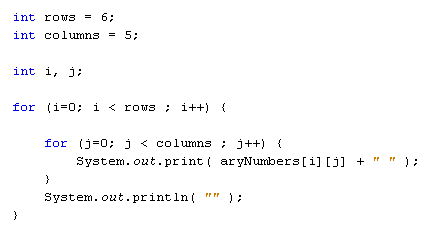
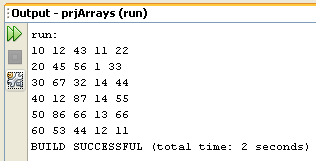

Multi-Dimensional Arrays in Java
The arrays you have been using so far have only held one column of data. But you can set up an array to hold more than one column. These are called multi-dimensional arrays. As an example, think of a spreadsheet with rows and columns. If you have 6 rows and 5 columns then your spreadsheet can hold 30 numbers. It might look like this:

A multi dimensional array is one that can hold all the values above. You set them up like this:
int[ ][ ] aryNumbers = new int[6][5];
They are set up in the same way as a normal array, except you have two sets of square brackets. The first set of square brackets is for the rows and the second set of square brackets is for the columns. In the above line of code, we're telling Java to set up an array with 6 rows and 5 columns. To hold values in a multi-dimensional array you have to take care to track the rows and columns. Here's some code to fill the first rows of numbers from our spreadsheet image:
aryNumbers[0][0] = 10;
aryNumbers[0][1] = 12;
aryNumbers[0][2] = 43;
aryNumbers[0][3] = 11;
aryNumbers[0][4] = 22;
So the first row is row 0. The columns then go from 0 to 4, which is 5 items. To fill the second row, it would be this:
aryNumbers[1][0] = 20;
aryNumbers[1][1] = 45;
aryNumbers[1][2] = 56;
aryNumbers[1][3] = 1;
aryNumbers[1][4] = 33;
The column numbers are the same, but the row numbers are now all 1.
To access all the items in a multi-dimensional array the technique is to use one loop inside of another. Here's some code to access all our number from above. It uses a double for loop:

The first for loop is used for the rows; the second for loop is for the columns. The first time round the first loop, the value of the variable i will be 0. The code inside of the for loop is another loop. The whole of this second loop will be executed while the value of the variable i is 0. The second for loop use a variable called j. The i and the j variables can then be used to access the array.
aryNumbers[ i ][ j ]
So the two loop system is used to go through all the values in a multi-dimensional array, row by row.
Exercise J
Finish off the programme above where we are writing a programme to print out
all the values from the spreadsheet. Your Output window should look something
like this when you're done:

Multi-dimensional arrays can be quite tricky, but mainly because it's hard to keep track of all your rows and columns! In the next part, you'll learn about array lists.